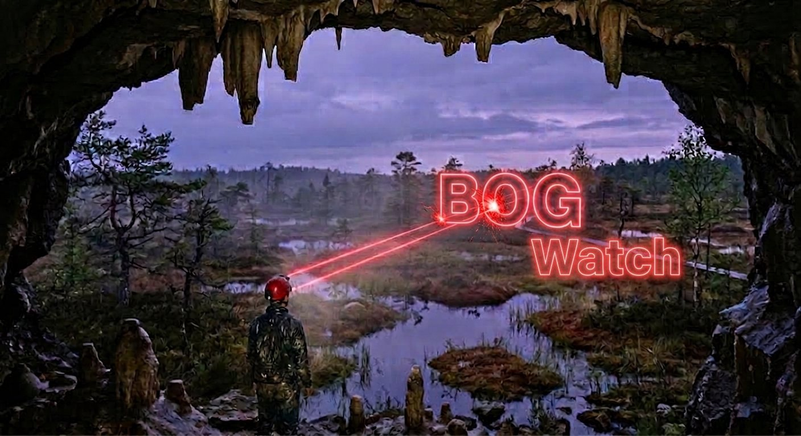

Public records · facts, sources and questions
A recurring call on the National Speleological Society Board of Governors, read from the public record — what it contains, what it does not, and the questions that follow.
Every document discussed on these calls was retrieved from a public web address, with no login, no account and no cookies. Each has a source address, a SHA-256 fingerprint and a retrieval time on file.
Not affiliated with the NSS. Only facts, sources and questions. The record speaks for itself. Convened by Aaron Bird, NSS Fellow, NSS #27029.
Where things stand
All minutes posted for 2026 meetings carry “DRAFT 1” on page 1, and none has been added to the website's Board Minutes collection.
Source: minutes files collected 22 Sep 2026; Board Minutes collection checked 24 Sep 2026.
The meetings of 27 May and 14 September 2026 had agendas posted, but no minutes had appeared as of 24 September 2026.
Source: caves.org public file index, checked 24 Sep 2026.
Across the 24 Board meetings since March 2022, the gap between a meeting and the first public copy of its minutes runs from 5 to 504 days. Three fall within 30 days.
Source: Meeting of 24 September 2026, where the full series is charted.
Next call
Thursday 1 October 2026 · 9:00 PM Eastern
8:00 PM Central · 7:00 PM Mountain · 6:00 PM Pacific
How the Board's rules are written, changed and published — including the 2024 restructuring that cut about 963 Acts to 135.
One-tap mobile:
+13017158592,,89313488946#,,,,*887790# US (Washington DC) ·
+13052241968,,89313488946#,,,,*887790# US
Then: Thursday 8 October 2026, 9:00 PM Eastern — NSS Financials. What the public financial record shows: budgets, Secretary-Treasurer reports, audits and IRS Form 990 filings.
Archive